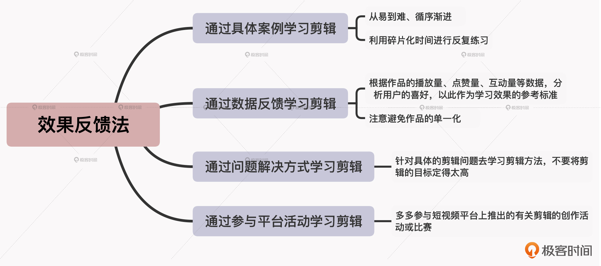

- 00 开篇词 短视频时代下，怎么把握好变现风口？.md
- 01 爆款短视频的底层逻辑：用心拍的短视频为啥没人看？.md
- 02 爆款短视频的底层逻辑：如何轻松打造自我特色？.md
- 03 精益创业法：如何快速跨过从0到1这道坎？.md
- 04 SWOT法：这么明显的个人优势你为啥就是看不到？.md
- 05 效用函数法：如何用量化的方式进行高效创作？.md
- 06 二次创新实验法：如何打造个人的差异化定位？.md
- 07 平台定位：如何选择最适合自己的创作平台？.md
- 08 如何快速找到各大短视频平台的正确切入点？.md
- 09 选题（上）：如何利用思考清单找到合适选题？.md
- 10 选题（下）：如何为不同的内容定制合适选题？.md
- 11 优劣分析法：如何快速筛选适合创作的视频素材？.md
- 12 标题（上）：如何利用微创新巧妙找到爆款标题？.md
- 13 标题（下）：如何用对号入座的方式抓住标题亮点？.md
- 14 视频封面（上）：如何快速抓住用户注意力？.md
- 15 视频封面（下）：如何传递最有价值的信息？.md
- 16 视频剪辑：如何轻松掌握视频化剪辑的三大公式？.md
- 17 效果反馈法：剪辑很容易，为什么你却一直学不会？.md
- 18 剪辑对比（上）：如何避开常见的短视频剪辑陷阱？.md
- 19 剪辑对比（下）：如何利用剪辑技巧提升视频质量？.md
- 20 拉片法：用电影创作的方式学习爆款短视频运营技巧.md
- 21 用户留存率：为什么粉丝很多但忠实拥趸却很少？.md
- 22 点赞率（上）：如何有效提升短视频的点赞量？.md
- 23 点赞率（下）：三种方法轻松提升用户对内容的认可度.md
- 24 上瘾机制：为什么视频观看量很高却没人留言？.md
- 25 避坑指南：为什么很多短视频账号中途做不下去了？.md
- 26 如何找到适合自己的短视频变现模式？.md
- 27 多元化变现：如何明确不同创作阶段的变现任务？.md
- 28 多内容变现：不同内容的主打变现模式是什么？.md
- 结束语 一切成大事者，都是终身学习者.md
17 效果反馈法：剪辑很容易，为什么你却一直学不会？
你好，我是周维。
上节课，我们是站在具体的创作场景的维度，学习了如何利用剪辑公式来更好地服务创作的内容。今天这节课，我们会站在剪辑操作的角度，来学习如何快速掌握剪辑的技巧。
在开始学习之前，我想先问你一个问题：如果有以下两种学习剪辑的方法，你会选择哪一种？
找一堆剪辑教程，先从最基础的开始，一个个去学习。
围绕当前流行的剪辑手法以及用户喜欢的呈现方式，查看自己所在的内容领域中一些热门作品的剪辑效果，然后根据这些作品的用户反馈，有目的地学习某一种剪辑技巧。
我想你肯定会选择第二个。因为有针对性、有目的地去学习，一定会比为了学习而学习的效果要好太多。
而且，如今的短视频行业玩法在不断更新，不同的短视频平台上流行的剪辑风格也一直在变化，所以你其实并不需要真的从0开始，投入很多的时间和金钱成本把剪辑这门技术学精、学透（除非你做的是剪辑技术流的内容类型，不过这种就不在咱们的讨论范围里了），而是可以根据一定的方法掌握相应的剪辑技巧。
那具体是什么方法呢？其实就是开头我提到的第二种剪辑方式，即根据反馈效果来有目的地提升剪辑水平，我把它称之为效果反馈法。我们先来看下它的底层实现逻辑：
也就是说，在学完某一种剪辑技巧后，将其应用到自己的作品里，查看一定时间内的用户反馈，如果反馈结果是正向的，那就继续保持、优化已经掌握的剪辑技巧；而如果结果是负向的，那就要及时调整剪辑方法，寻找能够带来正向反馈结果的剪辑技巧。这样，最后就能够建立起成功学习模式。
那到这里，你可能要问：要如何通过效果反馈法来学习短视频剪辑的技巧呢？
答案就是接下来我要给你分享的四种应用方法，分别是通过具体案例、通过数据反馈、通过问题解决方式、通过参与平台活动来学习剪辑，以此更好地掌握效果反馈法的学习精髓。
下面我们就具体来看看吧。
通过具体案例学习剪辑
效果反馈法的第一种应用方式，就是通过具体案例来学习剪辑。
我之前接触过一些刚刚开始创作短视频的创作者，发现他们都喜欢拿出很多的时间去学习剪辑技巧，比如我有一个做科技领域内容的朋友，有段时间一直在研究剪辑的转场技巧，而转场里又涵盖了很多不同的转场效果，他就一个个地记笔记。但是学习之后，过了一段时间就忘记了，根本没有学习效果。
对此，我给出的建议就是，通过具体的案例来学习剪辑技巧，而不是纯粹地去学习剪辑技巧，毕竟实践才是检验真理的唯一标准，带着案例中的方法边学边实操，才能快速掌握适合自己创作内容的剪辑技巧，并且在此过程中，也能更明确这些剪辑技巧的适用场景，节省自己在创作上的时间成本。
那具体该怎么根据案例来学习呢？有两种方法：
- 我们可以选取自己创作的一段短视频素材作为蓝本，将自己要学习的剪辑技巧应用其中。比如说，我的这位朋友就可以根据自己的视频内容，来具体分析每部分都需要什么样的转场效果，看看到底哪些是当前自己最需要的、哪些可以先暂时搁置，不断去尝试调整，从而明确最适合自己的剪辑方法。
- 我们也可以直接从短视频平台上寻找一段流行的短视频案例，然后照着这个短视频模仿剪辑一次，也能很快学会视频中的剪辑技巧。
另外，如果你想要寻找一个平台上创作者经常会用到的剪辑技巧，你也可以从这个平台上推出的剪辑App上寻找，上面会涵盖最新的剪辑功能、视频特效等，而且还会有官方推出的详细讲解教程，可以帮助你快速学习好某个方面的剪辑技巧。
通过数据反馈学习剪辑
效果反馈法的第二种应用方式，就是通过数据反馈来学习剪辑。
数据反馈就是用具体、可衡量的数据来选择合适的剪辑方法。也就是根据作品的播放量、点赞量、互动量等数据，分析用户的喜好，并以此作为学习效果的参考标准。
我给你举个例子。
在抖音上有一个搞笑类内容的创作者“D神哥哥”，他早期的作品点赞量大概是几百个，现在作品的点赞量最高达到了100多万，相差悬殊。而他一路走来，其实就是采用数据反馈的方式来慢慢改变自己的剪辑风格。
比如说，他最早期的作品，你会看到剪辑风格随意，没有任何特点，而且在推崇竖屏的抖音上居然还是横屏格式。但他在下一次的作品中就经过了修改，不仅作品变成了竖屏，在剪辑风格上也采用“踩点”式的方式与背景音乐匹配在一起，这一次的点赞量果然比上一次高出很多。之后，通过这些作品数据的反馈，他慢慢形成了适合自己的剪辑风格：劲爆的背景音乐、山寨式的走台风格，以及一镜到底的拍摄风格。这样，用户也越来越喜欢他的作品。这里呢，我也给你放上了他作品点赞最高的一期，你可以观摩一下。
其实，这些都是以数据反馈作为剪辑的参考标准，慢慢进行优化调整，让用户越来越喜欢自己的内容。
那么，对于数据反馈学习剪辑的方式，具体该怎么做呢？我认为有两个关键步骤：
首先，针对创作的内容，适量地采用一些当下流行的剪辑技巧，如转场、贴纸、画中画、特效、背景音乐等方式，让内容变得更生动、活泼、有趣。
然后，将未经过剪辑升级的，与当前结合了流行剪辑技巧的作品的各项数据进行对比，看看获得的播放量、点赞量、互动量等数据的差异有多少。如果经过剪辑的作品数据反馈比较好，那就证明是跟剪辑技巧有关系。
不过，为了让结论更加准确，你还可以在留言区内给用户留下互动的小问题，比如问问大家对剪辑后的作品有什么看法，并给出相应的激励（比如会根据好的反馈赠送用户小礼物等）。这样，你就可以精确统计用户对经过精心剪辑后的作品的有效评价，得出自己想要的答案了。
但是这里我还需要提醒你一下，那就是你在给用户留下问题时，尽量不要留问答题，而是选择题。这样做能够减少用户的思考时间，用户付出的成本小且有回报，相对得到的有效评价就会更多。如果你需要大家花费更多的时间来帮助你，那么你要付出的成本同等也需要更大一些才行。
另外还有一点，采用数据反馈的方式来学习剪辑，可能会出现因为某种风格类型的视频受用户欢迎，而一直去做同一类型的视频，这样是不可取的。一直复制同一个视频的剪辑风格，会导致作品的单一化，也会受到用户的吐槽。
通过问题解决方式学习剪辑
好，现在我们来看下效果反馈法的第三种应用方式：通过问题解决方式学习剪辑。
我们知道，短视频内容要为用户提供价值，而为用户提供价值的其中一种方法就是能够帮助用户解决问题。但是，我们这里所说的解决问题的对象不一样，前者说的是用户，而现在说的是自己。换句话说，就是创作者要针对自己具体的剪辑问题去学习剪辑方法。
我给你举个例子。有一位园艺类的短视频创作者，刚开始创作内容的时候几乎不怎么剪辑视频，直接就将内容上传到短视频平台上，虽然他每次讲的也都是干货，但是与同领域的短视频创作者相比，自己内容的各项数据表现平平。
当然，他也知道是自己在短视频剪辑上的短板造成的，但是平时又忙于工作，根本没有太多时间去系统学习。之后，他就采用了通过解决问题的方式去学习剪辑，比如说，他拍摄的作品镜头语言差，不够优美，这些会影响用户的观看体验；另外，有时候视频中出现的花花草草虽然漂亮，但是因为光线等问题成像之后失去了美感。
他围绕这两点，首先是学习了拍摄中如何正确采用中景、远景、近景，以及如何通过不同的转场特效让画面更具美感。然后，在剪辑中使用合适的滤镜效果，以及废弃掉一些不合适的画面，达到了让画面更具美感的效果。通过这样的学习之后，他的视频质量大幅提高，播放量也是逐步攀升。
你看，这就是带着具体的问题去学习剪辑，反而会让自己的剪辑能力提升得更快。
通过参与平台活动学习剪辑
效果反馈法的最后一种应用方式是通过参与平台活动学习剪辑。
在日常的创作中，我们其实经常会看到短视频平台上推出的一些围绕具体内容进行剪辑的比赛，或者是在推出新的滤镜、剪辑功能时组织的创作活动。短视频创作者通过参与这样的活动，也可以大幅提升自己的剪辑水平。创作者不仅可以快速掌握平台推出的最新剪辑手法，得到更多的流量倾斜，还能获得专业人士的点评，让自己的剪辑能力提升得更快。
比如说，有位三农领域的创作者，由于他生活的地区风景秀丽，内容上的叙事性也不错，确实会有一些用户观看，但是因为剪辑水平差，导致了用户的观看体验很差。他也想学习短视频的剪辑方法，但是受困于自身条件，根本没有办法系统地学习。
后来，他参加了平台推出的与剪辑相关的比赛活动，比如最新模版的应用、热门视频的教程等，逐渐掌握了一些剪辑的技巧，一步步应用到自己的创作上，收获的流量也就越来越多了。
小结
这节课我主要是以效果反馈法为角度，重点讲述了四种应用方式：
- 在使用具体案例学习剪辑时，一定要从易到难、循序渐进，一点点地拓展自己的剪辑水平。同时，你也可以利用碎片化时间进行反复练习，这样更能提升你的剪辑水平。
- 在使用数据反馈法学习剪辑时，你要注意，各个短视频平台推出的剪辑App上都有热门的案例、模版、道具、教程等，上面也都有具体数字的标注，比如10万人在使用等字样。如果数据越大，就证明这个剪辑功能、方法越受用户的喜爱，你可以优先放到自己的作品中进行学习。
- 在使用解决问题的方法来学习剪辑技巧时，注意不要将剪辑的目标定得太高，而是要一个个地来解决具体的剪辑问题。因为一口吃不成个胖子，只有不断地给予自己正向反馈，你才能更有信心，更能坚持下去。
- 在使用参与平台活动来学习剪辑技巧时，你可以多关注下目前热门平台上的官方信息，试验着将最新的剪辑手法一步步应用到自己的创作上。
最后我再强调一点，只有通过有目的的反馈来验证学习效果，才能有效地学会剪辑技巧，掌握剪辑能力。

思考题
请你围绕每种方法的特性，结合自身的创作内容领域，思考一下：在剪辑门槛越来越低的趋势下，对于一个创作者而言，最需要具备的是什么？
欢迎在留言区分享你的答案。另外，如果觉得有收获，也非常欢迎你把今天的内容分享给更多的朋友。好，感谢你的阅读，我们下节课再见。
© 2019 - 2023 Liangliang Lee. Powered by gin and hexo-theme-book.